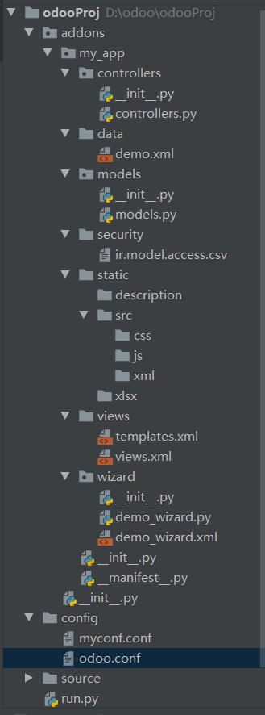
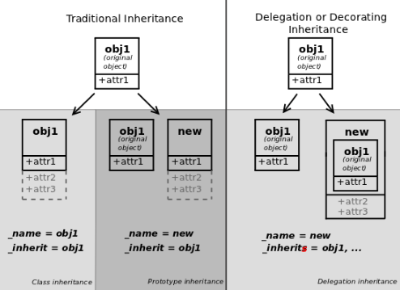

0.准备工作
0.1.安装postgresql
- 因为odoo强集成了postgresql,所以只能用postgresql,不能用其他数据库
- 直接到官网(https://www.postgresql.org/download/)下载下载下来安装即可(详细步骤: 略)
0.2.下载odoo源码
- 直接到官网(https://www.odoo.com/zh_CN/page/download)下载下来解压即可; 把目录改成source(对应下面章节的source),放到开发目录
0.3.安装环境
安装虚拟环境(看个人习惯,可以省略)
安装源码中的requirements.txt(可能会有的依赖包安装报错,建议自己写个脚本安装,下面是我自己的脚本)
1
2
3
4
5
6
7
8
9
10
11
12
13
14
15
16
17
18
19
20
21import os
# 具体根据自己的requirements.txt路径
BASE_DIR = os.path.dirname(os.path.abspath(__file__))
filepath = os.path.join(BASE_DIR, 'requirements.txt')
with open(filepath, 'r') as fp:
package = fp.readlines()
err_list = []
for i in package:
p = i.strip('\n')
try:
os.system('workon odoo_env2 && pip install {} -i https://pypi.tuna.tsinghua.edu.cn/simple'.format(p))
except:
print('安装[{}]包发生错误'.format(p))
err_list.append(p)
# 安装失败的包自己百度解决,通常情况下把错误信息复制百度即可
print('安装失败的包: ', err_list)
1.目录结构

注: run.py就是/source/setup/odoo
1 | # run.py |
2.配置文件,代码运行,模块声明文件
2.1.配置文件
主要配置说明
模块路径 addons_path(通常写上odoo源码的模块路径[/odoo/addons]跟自己的模块路径)
1
addons_path = D:\odoo\myodoo\source\odoo\addons,D:\odoo\myodoo\addons
超级管理员（用于创建，还原和备份数据库的操作）admin_passwd
1
admin_passwd=123456
数据库地址 db_host
1
db_host=127.0.0.1
数据库端口 db_port
1
db_port=5432
数据库用户 db_user
1
db_user=odoo12
数据库密码 db_password
1
db_password=123456
连接的数据名称 db_name
1
2db_name=db_erp
# 可以不填数据库过滤 dbfilter
1
dbfilter=^db_
data目录,用于存放session信息,附件等 data_dir
1
data_dir=D:\odoo\odoo-data
HTTP服务的侦听端口 http_port
1
http_port=8069
监听HTTP服务的接口地址 http-interface
1
http-interface=0.0.0.0 # 0.0.0.0表示可以被所有地址访问
详见odoo源码 /odoo/tools/config.py 105行 (或者命令python run.py -h)
2.2.odoo相关命令
参数”-c” 指定配置文件, “-u”–升级模块, “–xml=dev”–只升级修改的视图
启动命令
1
2
3python run.py -c [配置文件]
eg:
python run.py -c ./config/myconf.confshell命令
1
2
3
4python run.py shell -c 配置文件 [-d 指定数据库]
eg:
python run.py shell -c ./config/myconf.conf -d db_erp
# 注意: 如果配置文件里配置了指定的数据库,则不需要参数`-d db_erp`快速生成应用命令
1
python run.py scaffold app名称 [指定路径] [-t 指定模板]
2.3.模块配置文件(__manifest__.py)
详见: https://alanhou.org/odoo-13-module-manifests/
1 | { |
3.模型
- 详见源码: /odoo/models.py
3.1.三种模型
- 一般模型(models.Model)
- 映射到数据库中的表
- 瞬态模型(models.TransientModel)
- 存于数据,但会被定期清理,通常用于向导
- 抽象模型(models.AbstractModel)
- 不存储数据，不会在数据库创建表。 抽象模型作为可重用的功能集，利用Odoo的继承功能，混入到其他模型。通常用于定义接口或者用作报表模型
3.2.模型属性
- _name: 模型名称
- _inherit: Python继承的模型(‘model.inherit’ or [‘model.inherit’])
- _inherits: 委托继承
- _rec_name: 用来指出引用关联字描述记录的字段
- _order: 当浏览模型记录或者显示在列表视图时，设置默认顺序。
- _description: 模型的非正式名称,当用户界面显示模型时，一个方便用户的模型记录标题。
3.3.字段类型
详见源码/odoo/fields.py
- Char：单行文本
- Text：多行文本
- Selection：下拉单选
- Html：html富文本
- Integer：整型
- Float：浮点型
- Monetary：货币型
- Date: 日期型
- Datetime：日期+时间型
- Boolean：布尔型
- Binary：二进制文件类型
- Many2one: 多对一
- One2many: 一对多
- Many2many: 多对多
3.4.字段属性
详见源码/odoo/fields.py
string：字段名称(str)
default：默认值
help：帮助提示内容(str)
readonly：是否为只读(boolean)
required：是否为必填(boolean)
index：是否为索引字段(boolean)
copy：是否为允许复制(boolean)
计算属性
compute: 当前字段值为compute方法中的结果,视图上显示为只读,但与inverse一起使用时为非只读; 默认不存于数据库,但可以结合store=True来存于数据库
1
2
3
4
5
6eg:
f = fields.Char(compute='_compute_f')
def _compute_f(self):
for rec in self:
rec.f = 'fff'inverse: 逆计算字段,不能单独使用,必须跟compute结合使用; (可选)
1
2
3
4
5
6
7
8
9
10
11
12
13
14eg:
f2 = fields.Char(string='f2')
f = fields.Char(compute='_compute_f', inverse='_set_f2')
def _compute_f(self):
for rec in self:
# ...此处省略n行代码
rec.f = 'fff'
def _set_f2(self):
for rec in self:
# ...此处省略n行代码
rec.f2 = 'f2'store: 是否存于数据库(默认为True, 但在compute属性中默认为False)
related: 关联字段, 表示本字段引用关联表中的某字段。
groups：用户组，定义可操作的用户组(str)
domain: 过滤(筛选),用于关联字段记录的过滤
3.5.模型间关系
详见源码/odoo/fields.py
Many2one (多对一)
1
2
3many2one_b_id = fields.Many2one(
'demo.model.b', # 关联的模型
string='many2one类型', ondelete='cascade')One2many (一对多)
1
2
3
4one2many_a_ids = fields.One2many(
'demo.model.a', # 关联的模型
'many2one_b_id', # 关联模型中的Many2one字段
string='one2many类型')Many2many (多对多)
1
2
3many2many = fields.Many2many(
'demo.model.c', # 关联的模型
string='many2many类型')ondelete属性
- ‘set null’(默认): 设置为空
- ‘cascade’: 级联删除
- ‘restricted’: 约束删除
4.视图
4.1.form视图
form: 表单视图根元素
sheet: 可用于
form的直接子元素，针对更窄或更具响应式的表单布局header: 与
sheet拼接，在表单上方提供全宽的位置，通常用于显示工作流按钮及状态小组件button: 自定义按钮
1
2
3
4
5
6<!-- 当type="object", name就是对应模型(py文件)中的方法 -->
<button name="test_button" class="oe_highlight" states="draft" string="方法按钮" type="object"/>
<!-- 当type="action", name就是对应action的id -->
<button name="%(action_{ id })d" type="action" states="open" string="动作按钮" class="oe_highlight"/>状态条
1
<field name="state" widget="statusbar"/>
group
- newline: 仅在
group元素中可用， 提前结束当前行并立即切换到新行 (不预先填入任何剩余列)
- newline: 仅在
notebook: 定义标签区块。每个标签通过一个
page子元素进行定义- page: notebook下的子标签, 可以使用如下属性:
- string: 标签的标题
- attrs: 基于记录值的标准动态属性
- page: notebook下的子标签, 可以使用如下属性:
field: 渲染(并在可能时允许编辑)当前记录的单个字段; 属性如下:
- name(必须): 对应模型中的字段
- string: 字段显示的名称(如果在模型中写了string属性,则可以不写)
- readonly: 只读
- required: 必须
- invisible: 隐藏
- attrs: 基于记录值的标准动态属性
- options: 指定字段组件（包含默认组件）配置项的JSON对象
- widget: 小部件, 常用小部件有如下几种
- statusbar: 通常用于state(状态)字段
- many2many_tags
- one2many_list
- context: 上下文传递
- domain: 过滤(筛选),用于关联字段记录的过滤
nolabel
eg:
1 | <odoo> |
4.2.tree视图
tree
editable: 直接在tree视图上编辑
- editable=”top”
- editable=”bottom”
default_order: 默认排序
decoration-{ info, muted, warning, danger }: tree视图相关颜色
1
2
3
4eg:
<tree string="Expense Reports" decoration-warning="state=='draft'">
...
</tree>
field(跟form视图中的field类似)
eg:
1 | <odoo> |
4.3.窗口动作
1 | <odoo> |
4.4.查找视图
1 | <odoo> |
4.5.菜单
1 | <odoo> |
5.权限
模块权限
对于自己新创建的模型,需要在当前路径的**/security/ir.model.access.csv**上写上相应的权限
1
2
3id,name,model_id:id,group_id:id,perm_read,perm_write,perm_create,perm_unlink
access_demo_model_a,demo_model_a,model_demo_model_a,,1,1,1,1
access_{模型名称},{名称(通常为模型中_description属性)},model_{模型名称},{组id},1,1,1,1
组
1
2
3
4
5
6
7
8
9
10
11
12
13
14
15
16<odoo>
<record id="ir_module_category_{}" model="ir.module.category">
<field name="name">{名称}</field>
<field name="exclusive" eval="0"/>
<field name="sequence">15</field>
</record>
<record id="group_{}" model="res.groups">
<field name="name">{角色名称}</field>
<field name="category_id" ref="{所在模块根目录}.ir_module_category_{}"/>
<!-- implied_ids: 包括的角色-->
<field name="implied_ids" eval="[(4, ref('base.group_user'))]"/>
</record>
</odoo>
条件过滤——domain
| 操作符 | 说明 |
|---|---|
| =,>.<,>=,<=,!= | 比较运算，等于，不等于，大于，大于等于，小于，小于等于 |
| like | 模糊匹配，通过%value%匹配 |
| =like | 可以使用模式匹配，下划线-匹配一个字符，百分号%匹配零或者多个字符 |
| ilike | 类似like，但是忽略大小写 |
| =ilike | 类似=like，但是忽略大小写 |
| not like | 通过%value%不匹配的 |
| not ilike | 类似not like，但是忽略大小写 |
| =? | 未设置或者等于，未设置表示当值是None或者是False，其余和=一样 |
| in | 判断value是否在元素的列表里面 |
| not in | 判断value是否不再元素的列表里面 |
| child_of | 判断是否value的子录, [(A,’child_of’,A)]返回true |
写法: [(‘字段’, ‘操作符’, 值), (……)]
说明: 过滤出满足条件的记录
过滤出a模型中字段field1为True的记录
a_id = fields.Many2one(‘a.model’, string=’a模型外键’, domain=[(‘field1’, ‘=’, True)])
条件间的逻辑运算(注意: 一个逻辑运算符后面只能跟两个条件)
符号 说明 & ‘AND’或者’与’,表示后面2个条件同时满足。默认关系，可以省略 | ‘OR’或者’或’，表示后面2个条件满足一个就行 ! ‘NOT’或者’非’，将后面一个条件反转，如果是True，就变成False eg:
1
2
3
4
5
6
7
8# 满足A或B中其中一个即可
['|', A, B]
# 要么满足A条件,要么同时满足B和C
['|', A, '&', B, C]
# 要么满足A,要么满足B,要么同时满足C和D
['|', A, '|', B, '&', C, D]
6.ORM操作
env: 存储各种由 ORM 所使用的上下文数据：数据库游标(用于数据库查询)、当前用户 (用于访问权限检查) 及当前上下文 (存储任意metadata)。环境中还存储缓存。
- 当前用户(
user) - 游标 (
cr) - 超级用户标记 (
su) - 或上下文(
context)
6.1.常用方法装饰器
详见/odoo/api.py
api.model: 模型层装饰器
api.multi: 记录集装饰器
api.onchange: 监控前端页面某个字段的变化
1
api.onchange('val')
api.depends: 计算依赖
api.constrains: 约束,只支持简单字段,不支持关联字段
6.2.常用内置方法
详见/odoo/models.py
1 | class DemoModelA(models.Model): |
One2many和Many2many使用特殊“命令”格式来操作存储在该字段或与该字段相关联的记录的集合中。[见/odoo/models.py 第3280行]- (0, 0, values): 新增由所提供的
value字典所创建的记录。 - (1, id, values): 使用
values中的值更新已有的 id为id的记录。不能用于create()。 - (2, id, 0): 从集合中移除id为
id的记录，然后（从数据库中）删除它。不能在create()中使用。 - (3, id, 0): 集合中移除id为
id的记录，但不删除它。不能用于create()。 - (4, id, 0): 向集合添加id为
id的已有记录。 - (5, 0, 0): 从集合中删除所有记录，等价于对所有记录显式的调用于命令
3。不能用于create()。 - (6, 0, ids): 通过
ids列表替换掉集合中所有已有记录list, 等价于对ids中的每个id执行命令4然后执行命令5。
- (0, 0, values): 新增由所提供的
常用方法:
search(self, args, offset=0, limit=None, order=None, count=False): 查找数据,返回模型对象(详见源码/odoo/models.py 1543行)
1
2
3
4
5# 查找出所有数据对象(domain=[]为查找所有数据)
>>>self.env['demo.model.a'].search([])
demo.model.a(1,2,3)
>>>self.env['demo.model.a'].search([('char', '=', 'aaa'), ('integer', '=', 20)]) # 查找出字段char='aaa',并且integer=20的记录
demo.model.a(1,2)search_read(self, domain=None, fields=None, offset=0, limit=None, order=None): 查找数据,以列表包字典的形式返回指定字段的数据集,(进入tree视图默认执行的方法)
1
2
3
4# 查找出所有数据,返回指定字段为'char'和'integer'的结果
>>>a = self.env['demo.model.a'].search_read([], fields=['char', 'integer'])
[{'id': 1, 'char': 'xxx', 'integer': 20},
{'id': 2, 'char': 'ccccc', 'integer': 0}, ...]browse(ids): 返回指定id的模型对象
1
2
3
4>>>a = self.env['demo.model.a'].browse(2)
demo.model.a(2,)
>>>a = self.env['demo.model.a'].browse([1,2])
demo.model.a(1,2,)create: 创建(使用api.model装饰器装饰), 返回新创建的对象
1
2
3
4
5
6
7
8
9
10
11
12
13
14
15
16
17
18
19>>>a = env['demo.model.a'].search([]) # 查找所有数据(domain=[]为查找所有数据)
>>>a
demo.model.a(1,2,3)
# 插入数据
>>>b = self.env['demo.model.b'].create({'val': 'xxx', 'related': '10',
'one2many_a_ids': [(0, 0, {'char': 'char', 'integer': 10}),
(0, 0, {'char': 'char2', 'integer': 50})})
>>>b
demo.model.b(3,)
>>>a = env['demo.model.a'].search([])
>>>a
demo.model.a(1,2,3,4,5)
>>>a[0].char
'char'
>>>a[1].char
'char2'
>>>b.one2many_a_ids
demo.model.a(4, 5) # 当前b对象关联a模型中的数据write: 修改(使用api.multi装饰器装饰), 返回布尔值
1
2
3
4
5
6
7
8
9
10
11
12
13# 操作b模型中id为3的对象,删除one2many_a_ids中的id为4的a对象
>>>b
demo.model.b(3,)
>>>b.write({'one2many_a_ids': [(2, 4, 0)]})
True
>>>b.one2many_a_ids
demo.model.a(5)
# 更新one2many_a_ids中id为5的a对象的char字段为'char5'
>>>b.write({'one2many_a_ids': [(1, 5, {'char': 'char5'})]})
True
>>>b.one2many_a_ids[0].char
'char5'unlink: 删除(使用api.multi装饰器装饰)
1
2
3
4
5
6
7
8>>>self.env['b.model.b'].search([])
demo.model.b(1,2,3)
>>>b
demo.model.b(3,)
>>>b.unlink()
True
>>>self.env['b.model.b'].search([])
demo.model.b(1,2)name_search: 获取关联模型记录(点击关联字段时触发)
name_get: 返回“ self”中记录的文本表示形式. 默认情况下，这是“ display_name”字段的值。(其实就是name_search返回的结果显示)
default_get: 进入form视图默认执行的方法,获取模型设置的默认值
7.继承

7.1.模型继承
1 | class AModel(models.Model): |
原型扩展
_inherit: 不会生成新的模型, 在原模型基础上扩展(或修改)字段或者方法1
2
3
4
5
6a_val,和class AModel(models.Model):
_name = 'a.model' # 可以省略
_inherit = 'a.model'
a1_val = fields.Char()
# 这时a.model当前的字段有 a_val和a1_val原型继承
_inherit: 复制所继承的模型,并创建新的模型1
2
3
4
5
6class CModel(models.Model):
_name = 'c.model'
_inherit = 'a.model'
c_val = fields.Char()
# 这时a.model当前的字段不变, 而c.model的字段有 a_val,a1_val,c_val代理继承
_inherits: 会创建新的模型,也会创建相应的数据表,但该数据表中只有d_val,b_id这两个字段;而ORM模型有d_val,b_id和b_val这三个字段1
2
3
4
5
6
7class DModel(models.Model):
_name = 'd.model'
_inherits = {'b.model': 'b_id'}
d_val = fields.Char()
b_id = fields.Many2one('b.model', string='b模型')
# 这时,d.model是一张新的表,而数据表里面显示的只有d_val,b_id字段,但ORM实际上有d_val,b_id和b_val这三个字段,并能做相关操作
7.2.视图继承
1 | <odoo> |
position:
before: 在指定元素块之前
after: 在指定元素块之后
attributes: 修改属性
1
2
3<xpath expr="..." position="attributes">
<attribute name="invisible">0</attribute>
</xpath>
8.wizard向导
模型
1
2
3
4
5
6
7
8
9
10class DemoWizard(models.TransientModel):
_name = 'demo.wizard'
_description = 'demo向导'
field1 = fields.Char(string='字段1')
field2 = fields.Char(string='字段2')
def demo_confirm(self):
print('demo向导确认...')视图
1
2
3
4
5
6
7
8
9
10
11
12
13
14
15
16
17
18
19
20
21
22
23
24
25
26
27<odoo>
<record model="ir.ui.view" id="demo_wizard_form">
<field name="name">demo向导</field>
<field name="model">demo.wizard</field>
<field name="arch" type="xml">
<form>
<group>
<field name="field1"/>
<field name="field2"/>
</group>
<footer>
<button name="demo_confirm" type="object" string="确认" class="btn-primary"/>
<button string="取消" class="btn btn-secondary" special="cancel" />
</footer>
</form>
</field>
</record>
<record model="ir.actions.act_window" id="demo_wizard_action">
<field name="name">demo向导</field>
<field name="res_model">demo.wizard</field>
<field name="view_type">form</field>
<field name="view_mode">form,tree</field>
<field name="target">new</field> <!-- 表示当前窗口 -->
<field name="view_id" eval="demo_wizard_form"/>
</record>
</odoo>触发: 在要触发的视图里添加button来进行触发
1
<button name="%(demo_wizard_action)d" class="oe_highlight" string="向导按钮" type="action"/>
9.网站接口
controllers
1
2
3
4
5
6from odoo import http
class MyApp(http.Controller):
def index(self, **kw):
return "Hello, world"
10.推荐阅读
官方文档(中文): https://alanhou.org/odoo-13-developer-documentation/